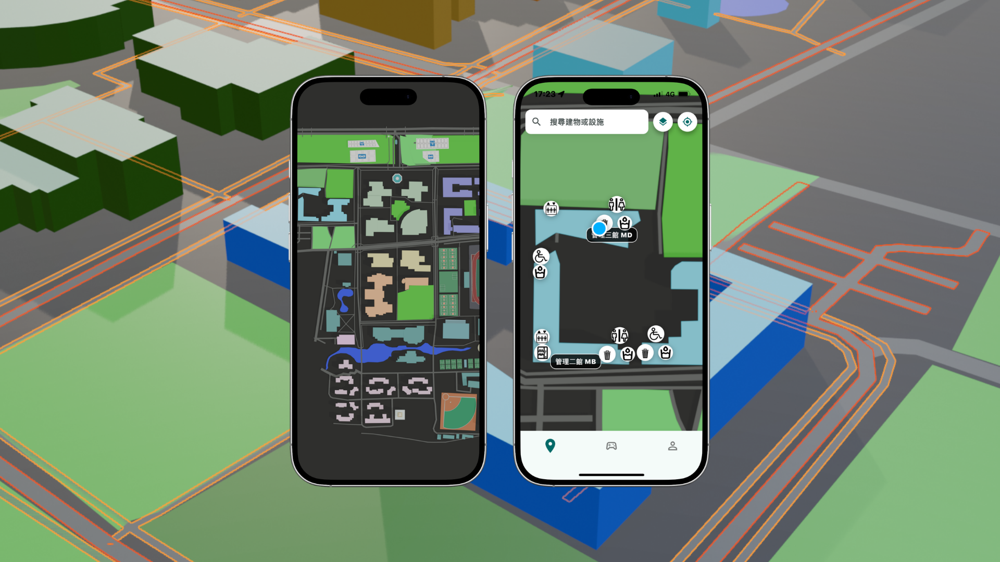
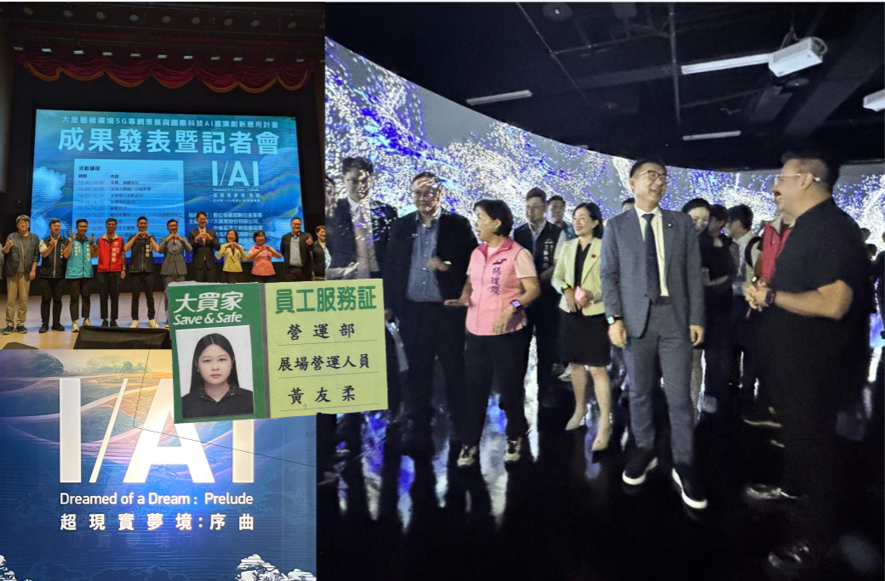

Self Introduction
Hello,
I'm
黃友柔
我是一位資訊管理系學生，也是設計師與開發者。 我相信科技可以改變生活，設計可以感動人心。 透過程式與視覺的結合，我致力於打造解決實際問題的產品。
Education
學歷歷程
國立雲林科技大學
資訊管理系
2024 - 2026
在求學過程中，我始終對於「將專案需求轉化為實體應用」抱持強烈熱忱。每當將抽象的功能需求，透過程式邏輯實踐為具備互動性的系統時，那種成就感讓我確信這是我熱愛的領域。
國立臺中科技大學
資訊管理系
2019 - 2024
在臺中科技大學五專部期間，我廣泛涉獵資管領域的多元課程。技術層面，透過物件導向程式設計與前端網頁開發，我建立了嚴謹的邏輯思維；管理層面，系統分析與設計與軟體工程等課程，則讓我學會從宏觀角度規劃資訊系統。
Selected Works
專案成就
雲座標之空間資訊應用
二技畢業專題，擔任組長。
面對 Google Maps 缺乏校內路網資料的困境，我主導策略轉向，自學 Blender 3D 建模從零構建校園 GIS 圖資。
透過「2D 平面圖層 + 仿射變換演算法」優化，成功將資料從 8.32GB 降至 MB 級，實現 3 秒快速載入。
核心技術：Blender、GIS、OpenStreetMap、2D 仿射變換演算法
角色：組長、全端開發、UI/UX 優化、性能優化

Mm.Bread 瑪利MAMA
五專畢業專題。針對瑪利亞基金會進行數位轉型，開發訂購系統。
主要負責跨載具介面設計（UI/UX）與後端功能開發，包括行動端 App 與網頁介面優化。
這段經歷讓我深刻體會到技術的價值在於解決實務痛點。
核心技術：MIT App Inventor、PHP、MySQL、Responsive Design
角色：UI/UX 設計、前端開發

Experience
實務經歷
5G AI 全球行動通訊展
Summer 2024 | 現場人員
在五專畢業與二技入學之間，參與由數位發展部主辦的「5G AI 跨域藝術展」。
擔任現場導覽人員，親眼見證 AI 根據觀眾心律生成個人化藝術作品的系統。
負責第一線使用者需求引導與技術諮詢，協助展示 AI 技術應用。
這段經歷讓我看到大數據與 AI 結合的巨大潛力。我觀察到使用者對新技術的困惑，進而思考如何讓 AI 系統在提供服務時，能更清楚地解釋運作邏輯，建立使用者信任。
這份體驗深化了我對「情境感知設計」的理解，也為二技專題的介面設計帶來啟發。

Skills & Tools
UI / UX Design
Frontend Development
HTML5 / CSS3
JavaScript / React
Flutter & Dart
Blender (3D Modeling)
Figma / UI Design Tools
Database / SQL
User Research & Analysis